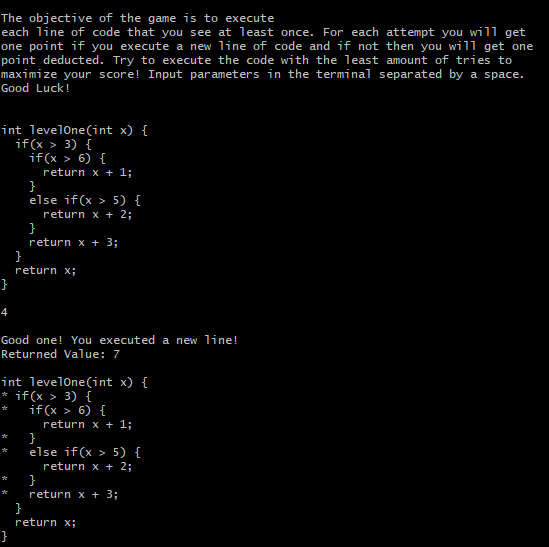

CoverBot
Gamifying Software Testing Education
- Sept. 2019 - June 2020
- Role: Research Assistant
- Scope: Product Design, UI/UX Design

Background
I've been using all sorts of different technology since I was born,
which is probably why my eyesight is so poor. Unfortunately, because I
rely on a vast range of software and hardware for my personal and
professional life, I've grown accustomed to programs, games, and
applications running smoothly. However, we both know that this is
rarely the case! Many people experience glitches or bugs in their
software, with not a clue on how to fix them.
Although they may be minor inconveniences to our daily lives, bugs
in code can be extremely dangerous elsewhere. For example,
faulty software used in airplanes or banks can cause tragic accidents
or dangerous data leaks. Here's exactly where the problem lies... why
do we have to deal with these bugs at all?
The Problem
Here's the catch. We shouldn't have to! The importance of testing our
code is not emphasized enough in both the industry and in coding
courses. In fact, research has shown that many professional programmers
find testing to be “trivial and uninteresting”. How can we improve the
quality of our code by effectively testing it before it's placed into
the market? Like most things, a great idea is to tackle it at the source
: education.
A Solution
We can utilize gamification to keep students engaged and motivated
when learning about software testing techniques, which will result
in better programmers, reducing the amount of bugs in our software.
To narrow our scope, we first focused on a specific sector of software
testing before branching out. We chose to gamify statement coverage.

Depiction of the testing technique known as statement coverage, which involves trying to execute every single line of code.
Context and Process
What brought me here was the Early Research Scholars Program at UC San Diego.
I applied for this program at the end of my freshman year, when I was still
scared of getting lost on campus! It was one of the greatest decisions of my
college career because it was an enlightening research experience.
Through an in depth process of defining a problem, reading research articles,
ideation, and testing with users, we were able to create a small game about
statement coverage. The game consisted of a few gamification techniques that
were rated to be the most effective, to name a few: reward system, progression, feedback.
My contribution spanned across game design, sound design, level design,
ecording meeting notes, and user testing.
Given the time frame of the program, our initial game was purely on the terminal.
However, it didn't really look like a game, and we decided that it just wasn't
practical enough to get decent data.

Our very first iteration of trying to gamify the process of learning statement coverage (done entirely on terminal)
We shifted toward a game with a better GUI and developed it with Unity and C#.
There was definitely a time crunch, but we managed to pull it off! Through several
intermediate user testing, we improved our game slowly, changing color
schemes, sounds, and graphics. Here is the final version of our game.
To test the effectiveness of our game, we had to conduct surveys where participants played both
the gamified version and non-gamified version of the program. The reason we had to create a
non-gamified version was because we needed a control for our experiment that at least in the
same scope as our game (we just took out a few gamification features)
Results: A Small Step in the Right Directiton
Users stated that the game introduced a sense of urgency with understanding
the concept, which made them focus and try harder. This was due to the fact
that they had a health bar and they could lose the game if their inputs
weren't good enough.
Users admitted that they were more engaged from the gamification aspects,
but the animations and sounds could be distracting at times. It was important
to find a good balance between engagement and learnability.
The metrics we decided to measure for success were met, leading us to
believe that this is the right direction for further research.
- Enjoyment levels
- Engagement levels
- Motivation levels
- How well they played the game


Reflection
Before my research, I was just as guilty as everyone else when it came
to testing my code. However, during our problem definition phase I
learned so much about the dangers of faulty software. I believe
gamification is a great tool to help motivate students to learn software
esting techniques. We definitely need a more polished product with a few
years of development, but I think it's a great start!
Some potential improvements:
- More gamification features
- Smoother animations
- Dynamic level creation
More Resources
Research Poster Overview
With an IEEE membership, you can view the full text here
Or you can view a non-camera ready version here